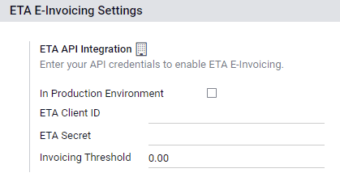

Egipto¶
Instalación¶
Instale los siguientes módulos para obtener todas las funciones de la localización de Egipto:
Nombre |
Nombre técnico |
Descripción |
|---|---|---|
Egipto - Contabilidad |
|
Paquete de localización fiscal predeterminado |
Integración de la facturación electrónica para Egipto |
|
Integración de la facturación electrónica de la Administración Tributaria Egipcia (ETA) |
Facturación electrónica para Egipto¶
Odoo cumple con los requisitos de facturación electrónica de la Administración Tributaria Egipcia (ETA).
Importante
La facturación electrónica en Egipto está disponible para Odoo 16.0. Si es necesario, actualice su base de datos.
Ver también
/administration/upgrade
Registre Odoo en su portal ETA¶
Debe registrar su sistema Odoo ERP en el portal de la ETA para obtener sus credenciales de API. Estos códigos son necesarios para configurar la aplicación Contabilidad de Odoo.
Acceda al perfil de su empresa en el portal de la ETA, haga clic en View Taxpayer Profile (Ver perfil del contribuyente).

Después vaya a la sección representantes y haga clic en Register ERP (registrar ERP). Complete el nombre del ERP (por ejemplo, Odoo) y deje los otros campos vacíos.

Una vez que se registró de manera exitosa, el sitio web le muestra sus credenciales de API:
ID de cliente
Secreto de cliente 1
Secreto de cliente 2
Nota
La ETA debe proporcionarle un nombre de usuario y una contraseña para ingresar a su portal en línea.
Solicite a la ETA que también le otorgue acceso al portal de preproducción.
Estos códigos son confidenciales, almacénelos en un lugar seguro.
Configuración en Odoo¶
Para conectar su base de datos de Odoo a su cuenta del portal de la ETA, vaya a , y escriba el ID de cliente de la ETA y el secreto de la ETA que recibió cuando registró Odoo en su portal de la ETA. En caso de ser necesario, proporcione un límite de facturación.
Importante
Realice pruebas en su portal de preproducción antes de comenzar a emitir facturas reales en el portal de producción de la ETA.
Las credenciales para los entornos de preproducción y producción son distintas, asegúrese de actualizarlas en Odoo cuando cambie de un entorno a otro.
Si aún no lo ha hecho, complete los detalles de su empresa con la dirección completa, país y número de identificación fiscal.
Códigos de la ETA¶
La facturación electrónica trabaja con un conjunto de códigos proporcionados por la ETA, puede utilizar la documentación de la ETA para agregar códigos a los atributos de su empresa.
Odoo se encarga de la mayoría de estos códigos de forma automática siempre que sus sucursales, clientes y productos estén configurados de manera correcta.
Información de la empresa:
Número de identificación fiscal de la empresa:
- ID de la sucursalUtilice
0como código si solo tiene una. Código de tipo de actividad
Otra información:
- Códigos de productoLos productos de su empresa deben contener el código y corresponder con sus códigos GS1 o EGS.
- Código fiscalLa mayoría de los códigos fiscales ya están configurados en Odoo, en el campo de Código de la ETA (Egipto). Le recomendamos comprobar que estos corresponden con los impuestos de su empresa.
Sucursales¶
Cree un contacto y un diario para cada sucursal de su empresa y configure sus ajustes de la ETA.
Para realizar esto, vaya a y haga clic en Crear.
Agregue un nombre para el diario según la sucursal de su empresa y como tipo seleccione ventas. Después, abra la pestaña y complete la sección ajustes de la ETA (Egipto):
Seleccione al contacto de la sucursal o cree uno en el campo sucursal.
Establezca el código de actividad ETA.
Establezca el ID de la sucursal ETA (utilice
0si solo tiene una).

Importante
El contacto seleccionado en el campo sucursal debe ser una empresa (no un individuo) y debe completar los campos dirección e ID fiscal.
Clientes¶
Asegúrese de completar correctamente los formularios de contacto de sus clientes para que sus facturas electrónicas sean válidas:
Tipo de contacto: individuo o empresa.
País
ID fiscal: el ID fiscal es el registro en caso de las empresas y el ID nacional para los individuos.
Nota
Puede editar los formularios de contacto de sus clientes en .
Productos¶
Asegúrese de configurar correctamente sus productos para que sus facturas electrónicas sean válidas:
Tipo de producto: productos almacenables, consumibles o servicios.
Unidad de medida: si también utiliza la aplicación Inventario de Odoo y habilitó las unidades de medida.
Código de barras: código de barras GS1 o EGS.
Código de artículo ETA (en la pestaña ): si el código de barras no coincide con su código de artículo ETA.
Nota
Puede editar sus productos en .
Autenticación por USB¶
Todas las personas que necesiten firmar facturas de forma electrónica necesitan una clave USB específica para autenticar y enviar facturas al portal de la ETA mediante un ERP.
Nota
Puede contactar a la Autoridad Fiscal Egipcia o a Egypt Trust para obtener sus claves USB.
Instalar Odoo como proxy local en su computadora¶
Un servidor local de Odoo funciona como enlace entre su computadora y su base de datos de Odoo alojada en línea.
Descargue el instalador de Odoo Community desde la página https://www.odoo.com/page/download y comience la instalación en su computadora.
Seleccione modo de proxy local como tipo de instalación.

Nota
La instalación de Odoo solo funciona como servidor y no instala ninguna aplicación de Odoo en su computadora.
Una vez que la instalación está completa, el token de acceso para el proxy local de Odoo aparece en el instalador. Cópielo y almacénelo en un lugar seguro para usarlo después.
Ver también
../../../administration/on_premise
Configurar la clave USB¶
Una vez que instale el servidor proxy local en su computadora, puede vincularlo a su base de datos de Odoo.
Vaya a y haga clic en crear.
Escriba el nombre de la empresa, el NIP en USB de la ETA que le proporcionó su proveedor de clave USB y el token de acceso que se le proporcionó al final de la instalación del proxy local. Luego, haga clic en guardar.
Haga clic en obtener certificado.